| プロメテウスの罠〔３〕 本庁は告げた「放射能観測を中止せよ」 (朝日新聞デジタルＳＥＬＥＣＴ) | |
| 朝日新聞 | |
| (2013) | |
ギリシャ神話に人類に火を与えた神族として登場するプロメテウス。第３部「観測中止令」のテーマはお役所の論理。福島第一原発の事故を背景に、国とは何か、民とは何か、電力とは何か、を考える。２０１１年１１月に朝日新聞に掲載した連載全１５回をＷＥＢ新書化。
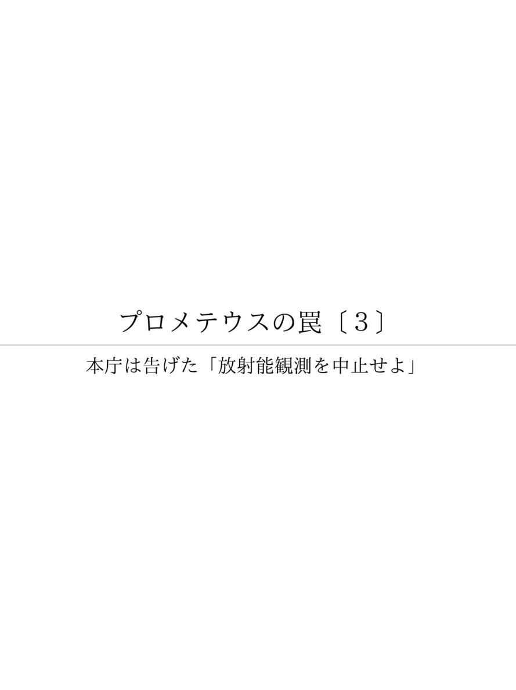
内容紹介
ギリシャ神話に人類に火を与えた神族として登場するプロメテウス。第３部「観測中止令」のテーマはお役所の論理。福島第一原発の事故を背景に、国とは何か、民とは何か、電力とは何か、を考える。２０１１年１１月に朝日新聞に掲載した連載全１５回をＷＥＢ新書化。
初出
朝日新聞 二〇一一年十一月七日～十一月二十三日
第１章 突然、本庁から電話
第２章 無視して採取続けた
第３章 放射能「高過ぎる！」
第４章 せっぱつまった事情
第５章 まさかそれが日本で
第６章 ネイチャーに出そう
第７章 削除してくれないか
第８章 センセーショナルだ
第９章 所長が謝ってほしい
第１０章 自分はしゃべれない
第１１章 予算どうなってるの！
第１２章 誰が気象研を教えた
第１３章 どこの機関から何が
第１４章 「文科省」４５分で１６回
第１５章 責任は負いたくない
２０１１年３月３１日、気象庁気象研究所の研究者、青山道夫（５８）は日本から届いたメールに驚いた。モナコで国際原子力機関（ＩＡＥＡ）の会議に出ていたさなかだった。
「放射能観測をやめろって？ 半世紀以上続いてきた観測なんだぞ」
気象研は１９５４年から放射能の研究をしている。きっかけはビキニ環礁で行われた米国の水爆実験だった。５７年からは大気と海洋の環境放射能の観測を始め、一度も途切れることなく続けてきた。いまや世界で最も長い記録となり、各国からも高く評価されている。
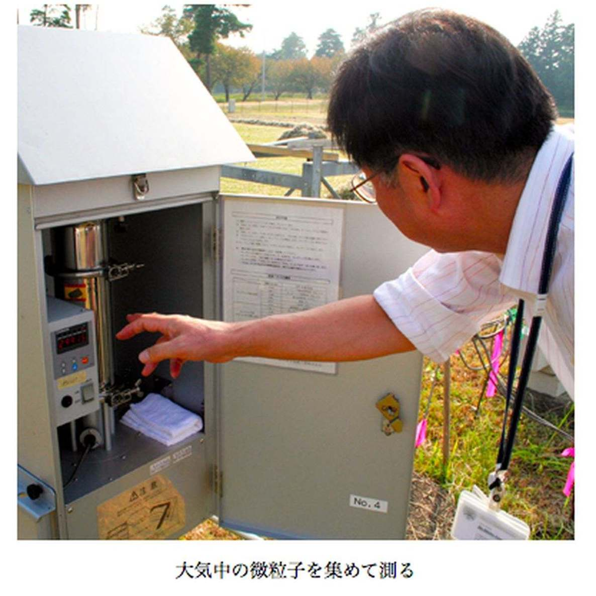
それをなぜやめなければいけないのか。よりによってこの時期に。
メールの主は茨城県つくば市にある気象研の企画室調査官、井上卓（４７）。３月３１日午後６時、本庁の企画課から突然、電話があったという。
「明日から放射能観測の予算は使えなくなる。対応をよろしく、と」
放射能が観測史上最高の値を示している時に、なぜやめるのか。聞き返したが、本庁は「その方向で検討してもらうしかない」という。
井上は途方に暮れた。
あと６時間で１１年度も終わる。その最後の日の退庁時刻も過ぎたころになって、明日からの予算を凍結するなんて聞いたことがない。
しかし、本庁の指示とあれば考えている時間はない。井上は分析作業員を派遣していた業者に電話した。
「突然で申し訳ありません。派遣職員の方に明日からは出勤しないよう、連絡いただけないでしょうか」
放射性物質の分析という特殊な技術を持つ人材と補助業務をする専門の職員を「放射能調査研究費」で雇っていた。その予算がなくなれば、明日からの給料は払えない。
「所内関係者を集めろ」
「会計課は送別会のはずだぞ」
「電話して呼び戻せ」
企画室はてんやわんやとなった。
気象研での放射能研究の中核は、地球化学研究部の青山と環境・応用気象研究部の五十嵐康人（５３）だ。
家に帰っていた五十嵐が呼び出された。企画室の職員が説明した。
「福島原発事故に対応するため、関連の予算を整理すると文部科学省から本庁に通達があったそうです。緊急に放射能を測らなければならなくなったので、そっちに予算を回したいと......」
気象庁気象研究所の研究者、青山道夫（５８）は１１年４月３日、モナコの国際会議から帰国するなり、企画室に飛び込んだ。
「放射能観測の予算凍結ってどういうことですか。本庁にもう一度確かめてください」
調査官の井上卓（４７）は答えた。「文部科学省が予算を配分してくれないのだそうです」
青山は文科省に連絡を入れた。
「今もっとも放射能観測が必要とされているときに、測るのをやめろとはどういうことですか」
担当は文科省原子力安全課の防災環境対策室である。その調整第一係長の山口茜から返事があった。
「気象庁から放射能調査研究費は必要ないとの回答をいただいています」
気象庁がそういった？ 青山は納得できなかった。
茨城県つくば市の気象研の敷地に、２メートル四方と１メートル四方の計三つの正方形の器が空を向いている。そこに雨をためることで大気中に漂う微粒子を集めて、放射能を測る。
別な装置では、大気中の微粒子をフィルターでつかまえて測る。さらに太平洋を航行する船に海水をくんで来てもらって分析する。こうした観測が１９５７年以来５４年間にわたり、途切れることなく続いてきた。
地球環境の変化は、長年にわたって観測し続けることでとらえることができる。昭和基地で空を見続け、南極のオゾンホールを世界で初めて発見したのは、気象研の研究者だ。欠測があってはならないと、懸命に観測をつなげてきた。
それを、福島原発事故から１カ月もたっていないこの時期に、なぜやめろというのだろう。
青山の同僚、五十嵐康人（５３）は「気象庁がいったん決めたのなら、もう元には戻らないだろう」と考えた。だが青山も五十嵐も研究者として、観測を中断することなどできなかった。予算凍結を無視して観測を続けることにした。
「予算がないなら、金を使わなければいい。分析は後回しにしても、サンプルだけは取り続けよう」
海水採取を委託した日本郵船の船は、予算凍結を連絡する前にすでに出航していた。
大気中の微粒子をとらえるフィルターは、休日や夜中にも出てきて交換した。フィルターなどの消耗品が足りなくなると、別の大学や研究機関の研究者がこっそり分けてくれた。
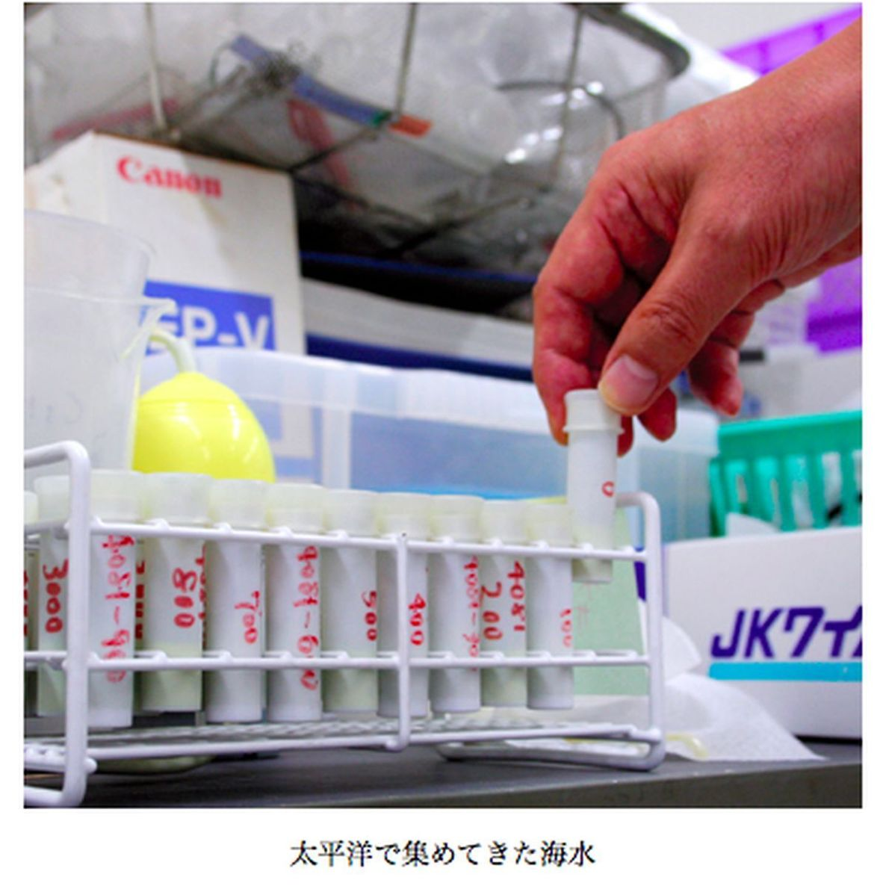
東日本大震災が起きた１１年３月１１日、青山道夫（５８）は茨城県つくば市の気象庁気象研究所にいた。棚の本がどさどさ落ちて床に散らばった。
揺れがおさまると、ヘルメットをかぶり、サーベイメーター（放射線測定器）をつかんで研究室を飛び出した。所内には放射性物質だの薬品だの危険な物がある。
「異臭がするぞ」
「ガラス割れてないか」
所内を走り回った。玄関のタイルがはがれ落ち、壁にひびが入っていた。安全点検が終わり、一息ついたのは夕刻だった。
テレビが福島原発のニュースを伝えている。「原子炉が冷却できない状態になっており、放射性物質が漏れる可能性があります」
翌１２日午後３時３０分ごろ、福島原発で爆発が起きた。破片が飛び散り、白煙がもくもくあがり、広がる様子がテレビ画面に映し出された。
約１７０キロ離れたつくば市にも、間違いなく放射性物質が飛んでくるはずだ。観測態勢を強化した。
大気中に漂う微粒子を集めるフィルターの交換は、これまで週に１回だった。１１年３月１２日夜から１２時間ごと、その後６時間ごとに増やした。サーベイメーターを持って何度も屋上に上がった。茨城県のモニタリングポストの数値を頻繁にチェックした。
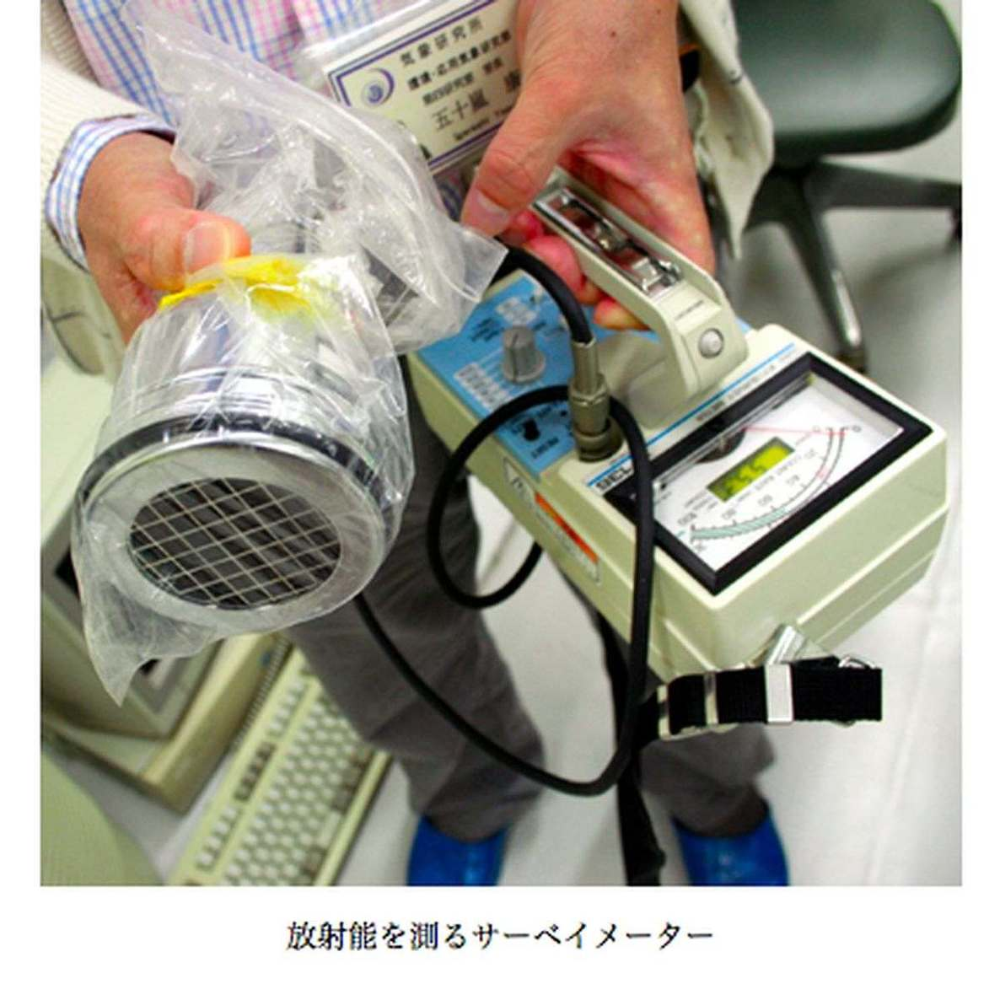
風向と風速を読んだ。放出された放射性物質が届くとすれば、１１年３月１４日か１５日のはずだ。
１５日朝、屋上の放射線量を調べた。午前８時４５分、毎時２・２マイクロシーベルト。
集めた大気中の微粒子の放射能を測ってみた。同僚の五十嵐康人（５３）が分析装置にかけ、うなった。
「測れない！ 高過ぎる」
赤、オレンジ、緑......、パソコンの画面いっぱい、放射線のエネルギーを示す線が無数に飛び出している。いったいどれがどの放射性核種なのか、よくわからない。故障かとさえ思った。これまで経験したことのない高レベルの放射能だった。
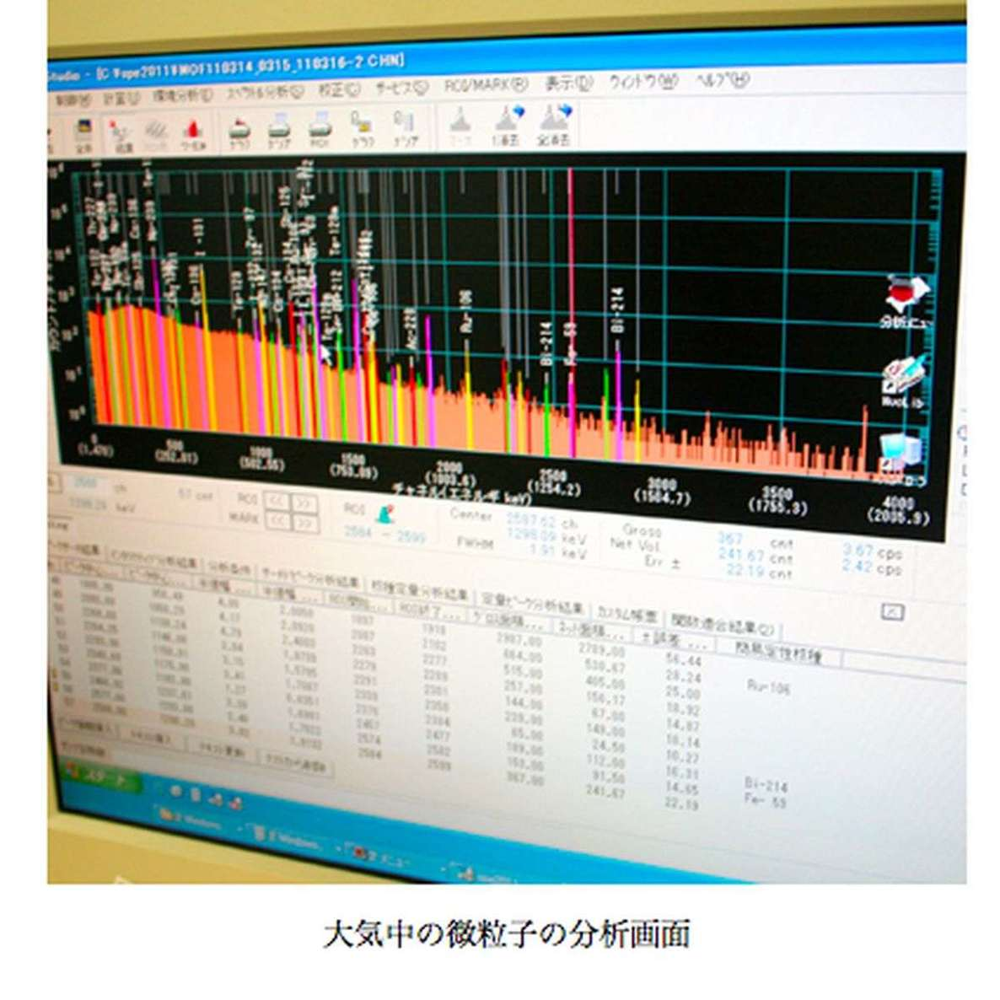
通常の測り方では無理だ。雨水は水で薄めてから分析し、換算した。フィルターで集めた微粒子は、放射線を測る検出器から離すため、１０センチほどの透明な容器を逆さに置き、その上に載せてから測った。
ヨウ素１３２は１立方メートル当たり１１３ベクレル。セシウム１３７は１４ベクレル......。異常な数値だ。
観測中止令が出たのは、そんな観測が続いていたころのことだった。
気象庁気象研究所が１１年度受け取るはずの「放射能調査研究費」は約４１００万円だった。
国の放射能調査研究費の総額は約１０億４３００万円だった。それを文部科学省が取りまとめ、関係各省庁に振り分けた。
輸入食品の放射能を測る厚生労働省。米国の原子力潜水艦の寄港時のモニタリングをする文科省と海上保安庁と地方自治体。離島の空間線量を測る環境省などだ。うち気象庁分は４％、分析にかかわる人件費が多くを占める。
気象庁に予算見直しの電話を入れたのは、文科省原子力安全課の防災環境対策室の職員だった。
担当の山口茜係長は説明する。
「予算を緊急の放射線モニタリングに回したい、と財務省がいってきたのです」
空間線量や土壌、食品、水......緊急に測らなければならないものが山ほどある。福島原発近隣だけではすまない。動員する人員も相当数になる。かなりの予算確保が必要だ。そのため、まずは放射能関係の予算から回せないか、と財務省も文科省も考えたのだと。
文科省は関係するすべての省庁に見直しを打診した。しかし総額の半分、約５億円を占める米原潜のモニタリングは削れない。日米安保条約に基づいているためだ。
気象庁に尋ねた。「気象研究所の放射能観測はモニタリングでしょうか、それとも研究でしょうか」
放射能を測ったデータを公表してもらえるなら、そのまま「緊急モニタリング」とすることができる。
しかし気象庁企画課調査官の平野礼朗（よしあき）（４１）は、研究なのでデータはすぐには公表できないと答えた。
「１１年度の放射能調査研究費は必要ありません」
すんなり受け入れてもらえたので、山口はほっとした。
「こちらから観測中止を求めたのではありません。予算の見直しをお願いしたら、気象庁から研究であってモニタリングではないと、予算の返還に応じていただいたのです」
電話を受けた平野の説明は、やや異なる。「１１年３月３１日夕のぎりぎりになって文科省が連絡してくるなんて、よほどせっぱつまった事情があるんだと思いました」
平野は、文科省からの電話を放射能観測の中止令と受け取った。
「それに、放射能観測は気象庁本来の業務ではないですから。優先度は低いのです」
放射能観測を自力で続けていた気象庁気象研究所の青山道夫（５８）は、放射能による環境影響の研究で国際的に知られている。
今夏、広島市が原爆の放射性物質の飛散状況を解明する論文集を作成した。「黒い雨」など放射性物質がどんな影響を及ぼしたかを解析し、国内外に知らせる目的でつくられた。青山はそれをまとめた専門家の一人だった。
気象研に勤務したのは１９８４年春だった。研究所の庭を歩いて、四角い器が空を向いているのを見て、思わずにやりとした。
「私が気象大学校時代につくったのと、そっくりだったのです」
青山は奈良県の高校を出て、千葉県柏市にある気象大学校に進んだ。理系の難関校だ。「給料がもらえるんですよ。４年で６年分の勉強ができると聞いて、いいなと思った」
１学年１５人という少人数なのも気に入った。学生ながら、本格的な実験や研究もできる環境だった。
天気や気象のことより、地球のことに興味を持った。水銀やカドミウムはどう運ばれ、循環するのか。大気中に漂う微粒子に付く物質を調べてみようと、大きな器をつくって校内の路上に置き、雨を集めた。自分で考えた装置だが、それが気象研のものとそっくりだったのである。
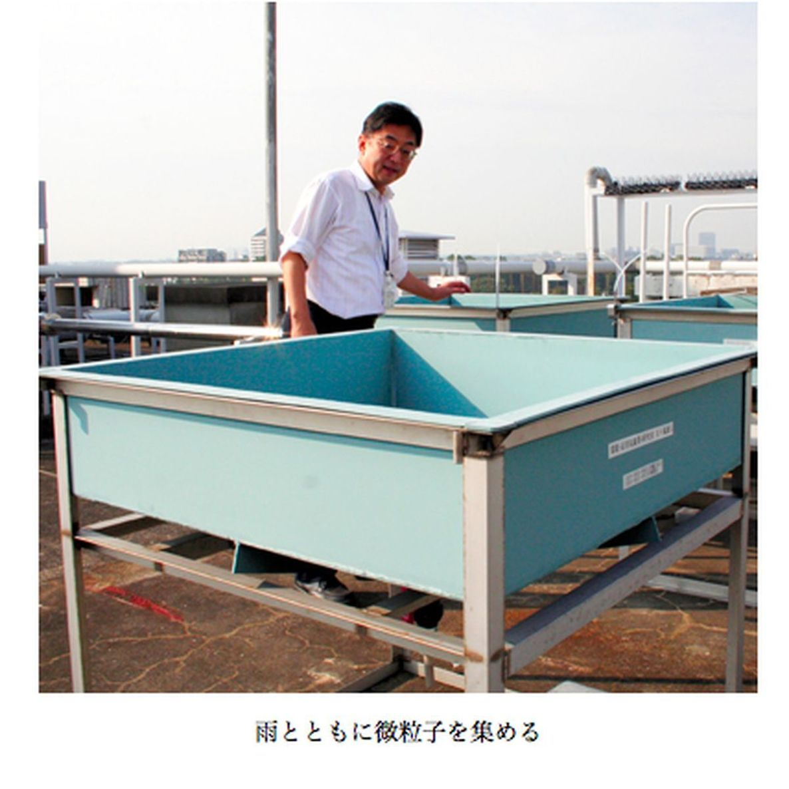
７７年春に卒業。気象庁の長崎海洋気象台に４年、函館海洋気象台に３年勤める。年間１５０日間は船に乗り、九州から沖縄、北海道周辺の海水を集め、分析した。
８４年春に気象研に呼ばれ、放射能観測を託される。主に青山は海、後に加わる五十嵐康人（５３）が大気を監視する態勢ができあがった。
６０年代は米ソの大気圏核実験の影響で高い観測値が続いていた。しかし冷戦構造がゆるんで核実験が減り、大気圏核実験は８０年の中国が最後となる。放射能は８５年には過去最低となった。１メートル四方の口のある器で雨を集めていたが、測るのも難しくなってきたため、２メートル四方の大きな器までつくったほどだ。
８６年、チェルノブイリ原発事故が起き、再び跳ね上がる。観測の重要性が再注目されることとなった。
最近になると、チェルノブイリ原発事故の影響も見えにくくなってきた。しかし、またどこかで原発事故が起きないとも限らない。そう思って続けてきた観測だ。
「まさかそれが日本で起きるとは思いませんでした」
英誌「ネイチャー」は、世界的にもっとも権威ある科学雑誌のひとつだ。そこに論文が載ることは、世界が知るということである。
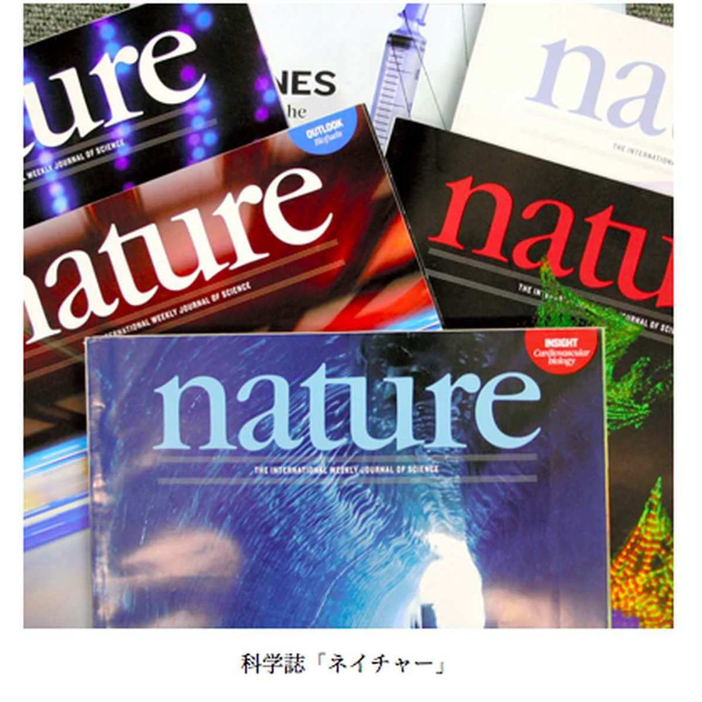
気象庁気象研究所の青山道夫（５８）は１１年４月、ネイチャー誌への論文掲載が決まっていた。テーマは「福島原発から出た放射性物質の海洋環境への影響」。
青山に論文作成を呼びかけたのは、研究者仲間のケン・ベッセラーだった。米国のウッズホール海洋研究所の研究者だ。チェルノブイリ事故直後からの付き合いで、青山も１９９６年に３カ月、ベッセラーの研究所で研究したことがある。
青山は１１年３月末、モナコの国際原子力機関（ＩＡＥＡ）の会議に出席した。そこにベッセラーもいた。特別セッションで福島原発事故に関する青山の報告を聞いて、こういった。
「ネイチャー誌に論文を載せよう。福島の事故は世界が注目している。早い方がいい」
ベッセラーは、青山がつくった海水中の人工放射能のデータベースを高く評価していた。「日本からの発信は少なすぎる。今こそ、君の長年の蓄積を生かすときだ」
青山は、研究者仲間の深澤理郎（まさお）（６１）にも声をかけた。深澤は独立行政法人である海洋研究開発機構の研究者で、海水の動きについての権威だ。
論文は３人の連名で出すことになった。１１年４月１８日、英文の素案がまとまった。
「海洋中に出たセシウム１３７は事故から３週間たってもまだ減少していない」
「海水１立方メートルあたり、福島原発の排水口付近で１００万～５千万ベクレル、沿岸で５万ベクレル、３０キロ沖合で千～５万ベクレル」
「過去の大気圏核実験がもたらしたレベルより数けた高く、８６年のチェルノブイリ原発事故で黒海やバルト海が汚染されたレベルより少なくとも１けた高い」――。
比較のグラフも付けた。チェルノブイリ事故による黒海などの放射能は高い所で数千ベクレルだが、福島原発排水口付近はその約１万倍。３０キロ沖では薄まり、黒海と近い値もある。
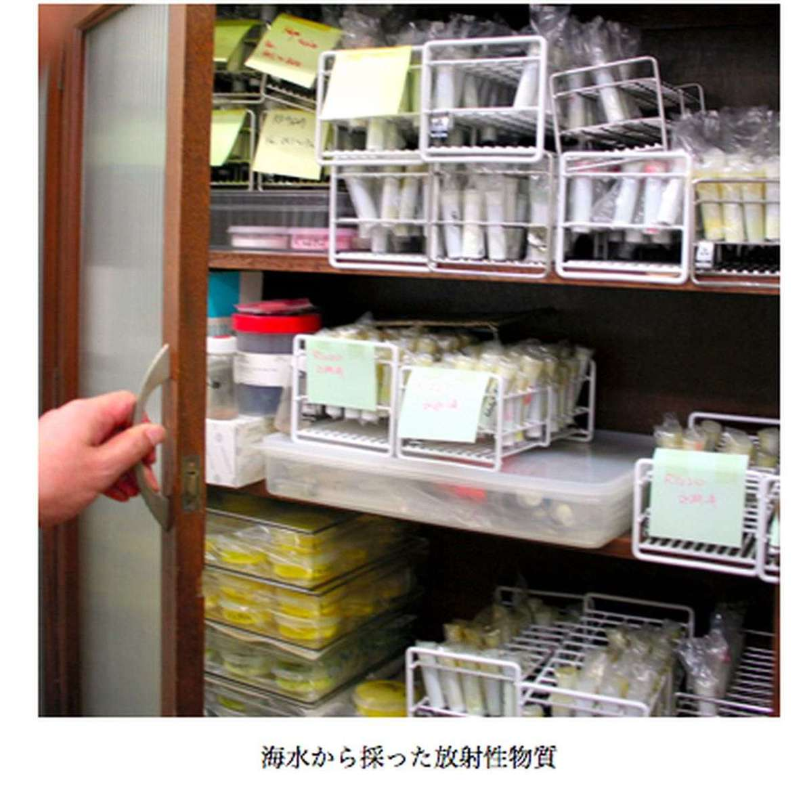
ネイチャー誌は大きな関心を寄せ、ただちに掲載を決めた。
青山は上司の地球化学研究部長、緑川貴（たかし）（５８）に論文を見せた。緑川は「問題ないんじゃないか」といって、投稿計画申請に判を押した。
しかし、問題は大ありだった。
気象庁気象研究所の青山道夫（５８）は、ネイチャー誌に投稿を予定していた論文の素案を地球化学研究部長の緑川貴（たかし）（５８）に見せた翌４月１９日、企画室に呼ばれた。
企画室長の韮澤浩（５２）が「内容について、いくつか聞かせてください」といった。
青山の上司である専門家の緑川が承認した論文について、企画室が説明を求めることなど、これまでなかった。不審に思ったが、論文の内容を解説した。
１１年４月２５日、今度は所長室に呼ばれた。韮澤、緑川に伴われ、所長の加納裕二（６０）と対した。
「チェルノブイリ事故のデータは、川で運ばれた何百キロも先の海の話だ。福島沖の海と比べるのは、科学的におかしいと思う」と加納が切り出した。
青山は「チェルノブイリ原発事故では放射性物質が川を通って海に出たわけです。離れていても川ではそれほど薄まりません」と説明した。
福島の場合、原発の排水口付近の放射能は、チェルノブイリ事故による黒海の汚染の１万倍ほどにもなってしまう。だが、３０キロ沖に離れると薄まり、同じレベルに下がっている値も示していた。
２人が説明した、当時のやりとりを再現する。
加納「専門家は判断できるかもしれない。しかしマスコミは、『福島の海はチェルノブイリ事故の１万倍の汚染』と書きかねないですよ」
青山「東京電力や文部科学省が公表したデータをもとにしているので、数値に間違いはありません。海の汚染がひどいのは事実です。だいいち『１万倍』という具体的な数字はテキストに書いてません」
加納「しかしグラフを見れば、そう読める」
青山「それについては正しく理解してもらえるよう、報道用に日本語の解説もつくって配ります」
加納「チェルノブイリ事故との比較を削れないものか」
青山「削れば、残るのは核実験の影響による太平洋の汚染との比較です。『１００万倍ひどい』なんて書かれることになりますよ」
しかし加納は譲らない。
「書き直さないなら、『気象庁気象研究所・青山道夫』の名前でこの論文を出すのは許可できない」
削除を求められた部分は、論文の共同筆者であるケン・ベッセラーの担当した所だ。青山には削ることなどできなかった。
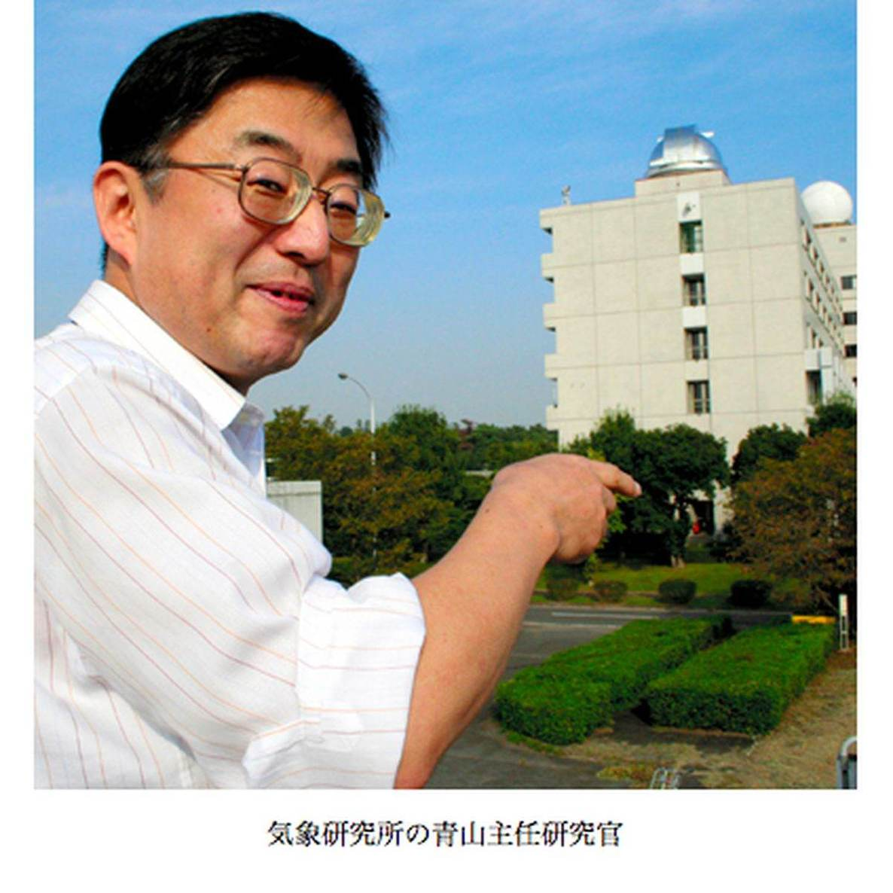
１１年４月２５日、青山道夫（５８）らのネイチャー誌論文は、掲載直前に気象庁気象研究所の所長加納裕二（６０）の許可が下りない事態になった。
その夕、青山は共同筆者のケン・ベッセラーにメールを送った。「所長の承認が得られない。私の名前をはずして論文を出してくれ」
しかしネイチャー誌は厳しかった。「所属機関のトップが反対する論文を掲載することはできない」
論文は掲載とりやめとなった。共同筆者のベッセラーと深澤理郎（まさお）（６１）に何とわびていいか、青山には言葉がなかった。
青山が属しているのは気象研の地球化学研究部である。その部長の緑川貴（たかし）（５８）が認めれば論文は問題なく公表できるはずだ。所長から不許可になった例はこれまでなかった。
地球化学研究部では、互いの研究を議論し合う情報交換会を毎週開いている。
１１年４月２２日には、青山の論文の内容を紹介して議論した。問題があるとする意見は一人もなかった。研究者たちの意見は緑川と一致して「公表すべきだ」だったという。
一方、所長の加納は、本庁の気象庁に論文を見せ、意見を求めていた。気象庁企画課長の関田康雄（５１）はこう答えた。
「チェルノブイリ事故時の海のデータと比べるのはサイエンスとしてどうでしょう。誤解を招くのではないでしょうか」
関田は取材に対し、そう判断した理由を話した。
「ふだんならいいのですが、こんな原発事故が起きた折、センセーショナルな数字が表に出て混乱を引き起こしたらまずい、と」
研究者の論文発表の是非が、気象庁まで上がっている。異例だった。
所長の加納は本庁勤めが長く、「研究畑」ではない。そういう管理職に、論文の科学的判断ができるのか。青山は納得できなかった。加納にメールで質問状を送った。所長室でのやり取りを文書にし、確認しておきたかった。
趣旨は大きく２点だ。
「マスコミが１万倍と書きかねないとの理由で、論文の部分削除を求めることは誤りです」
「専門家でない人が所長になる場合があり、そうした所長が承認しないと論文が発表できないのは、研究所として制度欠陥と思います」
質問状は関係各部長にも同送した。しかし２０日間が過ぎても所長から回答はなかった。
青山道夫（５８）は１１年４月２７日、ネイチャー誌への論文投稿を止めた気象庁気象研究所の所長、加納裕二（６０）に対し、質問状をメールで送った。しかし回答は来なかった。
１１年５月１７日、所長に催促のメールを送ったが、やはり返事はない。
「このままでは研究の発表もできなくなる」。青山は不満を強めた。
見かねた地球化学研究部長の緑川貴（たかし）（５８）が企画室に足を運んだ。緑川は室長の韮澤浩（５２）から聞いた「所長の考え」を青山に伝えた。
「チェルノブイリ原発事故との比較がフェアではないから承認できない、と。論文の中身がまったくだめだということではないらしい」
科学的な判断ではないのか。「マスコミが騒いで、パニックになることを心配しただけなんですね」
青山はますます納得できなかった。再び所長にメールを送った。
「共同筆者のケン・ベッセラーと深澤理郎（まさお）に謝罪をしてほしい」
ベッセラーは米ウッズホール海洋研究所の研究者で、ネイチャー誌への論文掲載を青山に勧めた友人だ。
深澤は海水の移動についての権威だ。「海洋汚染は、福島原発によるものの方がチェルノブイリ原発事故の時よりはるかに高いのは事実。審査が厳しいネイチャーも掲載の方向で進めていた。沖にいくと薄まると書いてあった。風評をあおらず、むしろ抑える内容だったと思う」
深澤の所属する海洋研究開発機構は、論文内容に異論を差し挟まなかった。深澤は「科学的に正しいかどうかは研究者の判断する領域。管理職の態度として『国の研究所の研究者という立場上、差しさわりがある』という理由ならまだ気持ちはわかります。納得はできませんが」と話す。
気象庁では、企画課長の関田康雄（５１）ら放射能の専門家ではない数人が議論。気になる点があるとして、「青山に書き直させた方がよいのでは」と気象研究所長の加納に意見を伝えていた。
共同筆者への謝罪の要求に対し、加納からの返事はなかった。代わりに韮澤からメールが来た。
「共著者に対する説明は、青山さんからしてください」
そしてこう付け加えられていた。「まだ事故が収束の方向にあるのかどうかわからず、報道もさまざまな専門家・機関による発表やコメントを取り上げている現状では、（気象庁）企画課、所長から了解を得ることは難しいと思います」
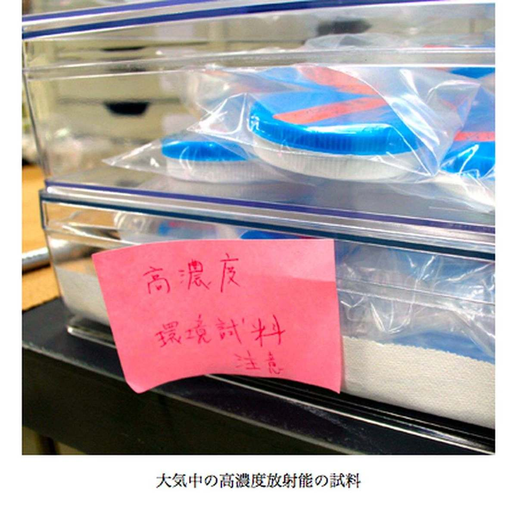
気象庁気象研究所は、放射能に関して外に対してものが話せないような空気になった。
福島原発事故後、青山道夫（５８）や、同僚の五十嵐康人（やすひと）（５３）のところには、取材や講演依頼が相次いでいた。主に青山は海、五十嵐は大気。環境中の放射能を研究する２人は、国内外に知られている。
１１年３月２３日朝、五十嵐のところに新聞記者から「福島原発から出た放射性物質の広がりを聞きたい」と取材依頼があった。
企画室の研究評価官が記録をとるために同席したが、そのほかに企画室長と五十嵐の上司の環境・応用気象研究部長までが顔をそろえた。
「拡散についてはお話しできますが、リスク評価はうちの仕事ではないのでコメントできません。うちの名前や私の名前が出る場合は、公を代表した意見ととられますので」。歯切れの悪い受け答えとなった。
青山に対しても、同じような対応が続いていた。
日本アイソトープ協会は、放射性同位元素の利用や安全に関する研究などに取り組む社団法人だ。１１年７月初め、東京で「アイソトープ・放射線研究発表会」を開くことにした。
発表会では緊急公開セッションが企画された。放出された放射能の環境影響や科学者の役割をテーマにした。参加予定の青山に発表をしてもらおうと、協会は気象研に講師派遣を依頼した。だが企画室は「手続きが間に合わない」と断った。
代わりに別の機関の研究者が講師となり、青山の海水汚染の研究データを引用しながら発表した。青山は、スクリーンに映し出される自分の研究データを演壇上の座長席から眺めていた。「変な気分でしたよ。自分はしゃべれないのですから」
１１年６月初めに約２週間、日米共同で福島沖の放射性物質を調べることになった。青山も参加予定だったが、辞退を命じられる。企画室長の韮澤浩（５２）は「国の緊急モニタリングを要請されるかもしれない。長期に空けられると困るからだった」と説明する。気象庁は「参加する予定はなく、事実と異なる」と提案書からの名前の削除まで求めていた。
五十嵐はいう。「気象研は国の研究機関です。私たちは公務員。であるなら、お客さんは国民です。国民が知りたいことに、私たちは応えていくべきだと思うんですが」
そんな気象研の空気が一気に変わるできごとが起きた。１１年６月２８日のことだった。
１１年６月２８日、つくば市の気象庁気象研究所に、民主党参院議員の森ゆうこ（５５）が突然やってきた。
森の事務所は「この件の取材は応じられない」というが、森の当日のブログにはこう記されている。
「本日の気象研究所視察は、貴重な研究結果や調査活動などが今回の原発事故に全くいかされていないという情報を受けて、昨日気象庁から報告を聞いたが要領を得ないため急きょ実施......」
さらに「α線検出器。予算も無く、研究者が退任したため活用できず」など放射能の観測現場を視察したことが記され、青山道夫（５８）と五十嵐康人（５３）に会って説明を聞いた様子が写真入りで載っている。
青山、五十嵐との面会は事前の予約なしだった。森はブログで２人のことを研究の「第一人者」で「権威」であると評している。
青山によると、森は携帯電話を取り出すと、その場で電話を始めた。
「相手は文部科学省のようでした。『予算は一体どうなってるの！』なんて感じで話してました」
１１年３月３１日に止められた１１年度の放射能調査研究費が復活したのは、それから間もなくのことだった。
予算復活について気象庁企画課は、文科省から「緊急モニタリングの予算は間に合ったので、必要な研究費があったら申請してください」と連絡を受けたと説明する。
１１年度に４１００万円を予定していた気象研の放射能調査研究費は、３９００万円に修正されて８月からついた。
大気中の微粒子や海水から放射能を測る研究は続けられることになった。１９５７年以来続いてきた世界最長の観測は、途切れずにすんだ。
ただ、研究の課題名と概要が若干変更され、当初あった「予測モデルの構築」という項目が削られた。青山は「放射能がどう広がるか、予測して勝手に外に流されては困るということでしょうか」と苦笑いする。
五十嵐は予算復活を、手放しでは喜べなかった。派遣の分析技術者らを呼び戻すことができなかったからだ。１１年３月３１日に予算が削られたとき、雇用を打ち切らざるを得なかった。彼らは他の機関からの誘いを受け、すでにそれぞれ新しい仕事場で働いている。精度の高い技術を持つ人々を失ったことは痛かった。
森はその後、文部科学省副大臣になった。だが１１年６月当時は関係ない。彼女は気象研の情報を誰から聞いたのだろうか。
１１年６月２８日、参議院議員の森ゆうこ（５５）が気象研究所を訪れた翌月、放射能調査研究費の復活が決まった。
森の事務所は「この件について何もいえる立場にはない」と口を閉ざす。誰から話を聞いたのだろう。
気象研の研究者はいろいろ大変だという話は、すでに放射能や大気、海洋の研究者の間でうわさになっていた。たどっていくと一人の人物が浮かんだ。木村真三（４４）。福島原発事故後、勤務先の研究所に辞表を出して現場に飛び込んだ研究者だ。
木村は「森さんの件？ ああ、それは私です」といった。
森は当時、放射能から子どもたちをどうしたら守れるか、情報を求めていた。木村が出ていたＮＨＫのＥＴＶ特集をみて連絡をとってきた。
木村は「気象研なら放射能の観測データを持っている」と教えた。
気象研は放射能観測でトップレベルと思っている。実感したのは、１９９９年に起きた茨城県東海村の核燃料加工施設の臨界事故のときだ。当時、木村は放射線医学総合研究所にいた。専門家が調査団をつくり、気象研からは五十嵐康人（やすひと）（５３）や青山道夫（５８）らが参加し、中核を担った。仕事ぶりは際立っていた。
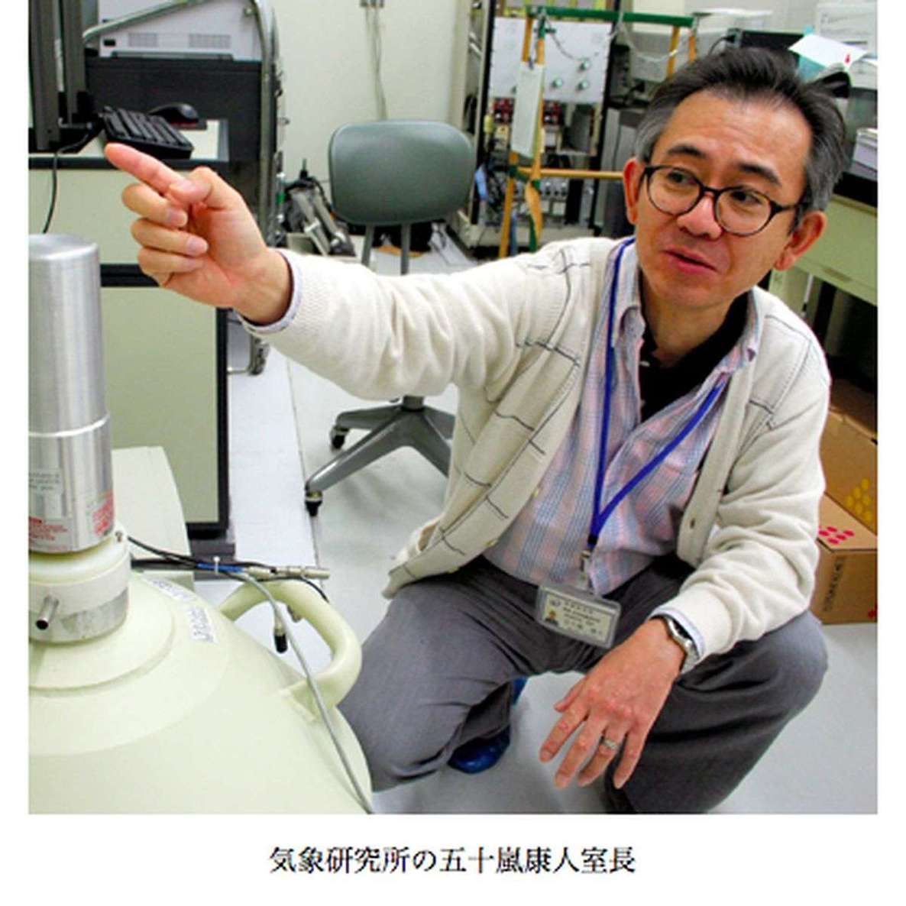
ただ、森には「気象研はひと筋縄ではいかないですよ」と付け加えた。福島原発事故の直後、自身も放射能情報の収集の協力を求めたのだが、にべもなく断られたからだ。
森はまず、気象庁の本省である国土交通省に問い合わせた。
「気象研のデータは出ているかと、うちにまわってきました」と気象庁企画課の平野礼朗（よしあき）（４１）はいう。森の事務所に出向いて説明したが、「答えになっていない」といわれてしまう。「それで直接、気象研へ行かれたのでしょう」
その訪問から間もなく、凍結されていた放射能調査研究費が戻ることになった。気象庁企画課長の関田康雄（５１）は「文科省から、緊急モニタリングの方は補正予算から出ることになって、間に合ったと」。
１１年７月８日、気象研のホームページに「東京電力福島第一原子力発電所事故に伴う放射性物質の移流拡散について」という情報が公開された。詳しいデータがあり、放射性物質が福島原発から流され、広がっていく様子を動画で見ることができる。
その３日後、森のブログにも「気象研究所が発表した」とリンク先のアドレスが紹介されている。
まるで、一気に氷がとけたようだった。
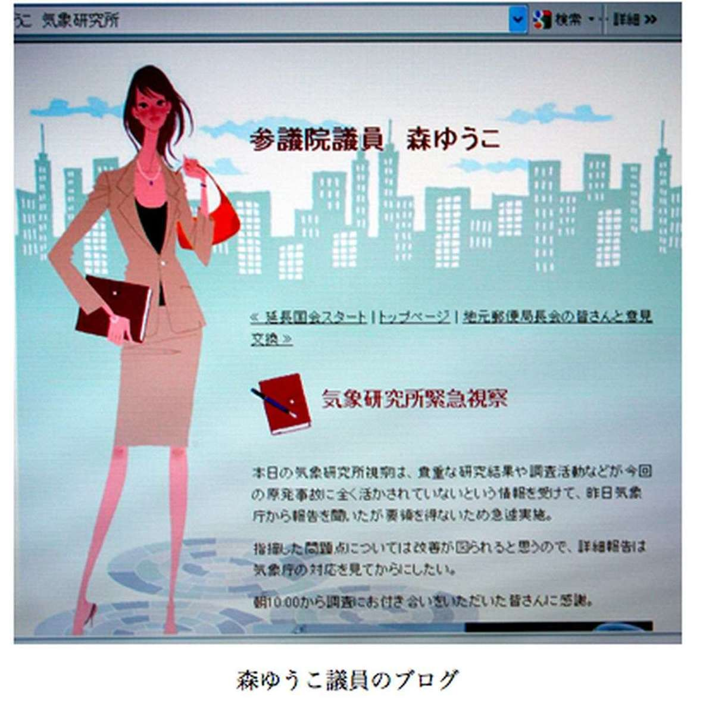
１１年１１月８日、気象庁気象研究所の青山道夫（５８）と五十嵐康人（５３）らに文部科学省から調査が入った。
１１年３月３１日に予算が止められたにもかかわらず、彼らは福島原発から出た放射性物質をとらえるため、観測を続けた。「１９５７年以来の観測を途切れさせてはならない。予算なしでもできる限りやろう」。そんな思いで苦心する２人を知り、外部から応援してくれた人たちがいた。
そのことを１１年１１月８日付のこの欄で紹介した。「消耗品が足りなくなると、別の大学や研究機関の研究者がこっそり分けてくれた」と。録音を聞き直しても、気象研はそう説明している。読者からの反応は、多くが「継続できてよかった」だった。それには消耗品を分けた研究者への賛辞も含まれていた。ところが――。
文科省の反応は違った。
原子力安全課の防災環境対策室係長、山口茜は同日、気象庁を通してこう気象研に問い合わせた。「どこの機関から何が提供されたのか」
取材した私にまで山口が尋ねてきたので、逆に聞いてみた。
――なぜそれを確かめる必要があるのですか？
「もし消耗品が余っていて、分けてあげたのなら、その予算は返していただかないといけませんから」
――誰かにいわれて調べているのですか？ 財務省から？
「いいえ。私がそういうことがあればいけないと思って。財務にも聞かれかねないですから」
――程度の問題もあるんじゃないですか？ 何十万、何百万円と余らせるのはよくないですが、１０円とか１００円単位でも予算を返せと？
「ルールとして返してもらわなくてはいけません。財務省にも厳しくいわれますから」
半世紀以上も続いてきた観測が途絶えることには興味を示さず、継続のために研究者が融通し合った消耗品の行方には過敏に反応する。気にかかるのは財務省の意向らしい。当の財務省に聞いた。
答えてくれたのは同省文部科学第四係の主査、佐久間寛道。返答はあっさりしていた。「そんなことうちは聞きませんよ。予算執行はそれぞれが責任もってやることでしょ」
山口に対し、気象研は「記事は事実ではない」と回答した。「他機関から観測データがほしいと依頼があり、代わりに消耗品をいただいた。こっそりではない」という主張だ。もちろん取材時に気象研からそんな説明はなかった。
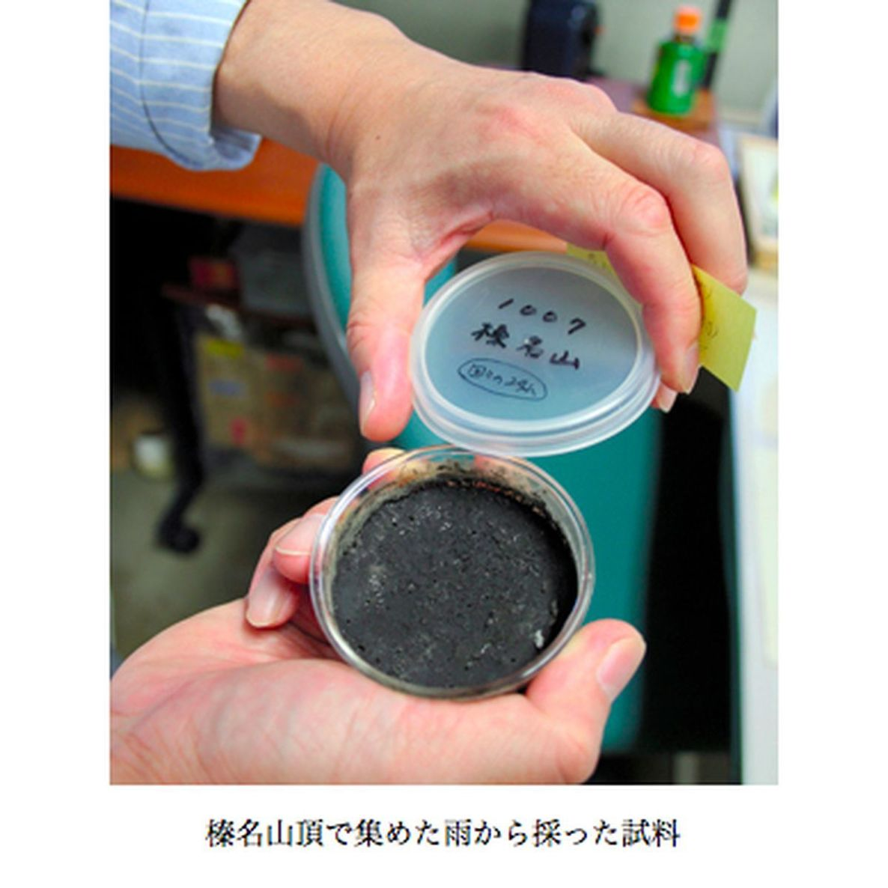
１１年１１月１７日午後２時、東京・大手町にある気象庁１階の会見室で、気象庁長官の定例会見が開かれた。
長官の羽鳥（はとり）光彦（５７）が冒頭数分、災害情報に関する報告をしたが、その後の４５分間の質疑はすべて、今回の連載で取り上げたことに関するものだった。
――放射能調査研究費が止められたことで、福島原発から流れる放射性物質をとらえていた観測が止められる事態になりかねなかった。これをどう考えるか。
羽鳥「文部科学省から要請があった。当時としての判断は正しかったと思う」
――世界が注目する放射能観測の重要性についてはどう考えるか。
羽鳥「政府全体の計画の中で優先順位もあろうかと思う。文部科学省にお聞きいただけたらと思う」
――気象研究所では７月から、放射性物質が広がる様子をホームページに載せている。なぜそれまで公開できなかったか。
羽鳥「原子力防災計画においてＳＰＥＥＤＩ（緊急時迅速放射能影響予測システム）が位置づけられ、文部科学省が全体の対応を行っている。文科省がそれを利用して最善の対応を行っていくのが妥当と思う。ホームページの公開は、直前まで私はいっさい知らなかった」
一連の経緯について長官としての考えはほとんど示されず、「文部科学省の指示にしたがったまで」という趣旨の発言が繰り返された。会見中「文部科学省」という言葉は１６回使われた。
気象研の研究者、青山道夫（５８）らのネイチャー論文の掲載を、所長が認めなかった件でも質問が出た。しかし羽鳥は「所長を信頼しております」と繰り返すだけだった。
気象庁企画課も、福島原発事故とチェルノブイリ事故との比較は問題があるとの意見を付けた。それについて「客観的に科学的な評価や助言はできる」と妥当性を強調した。
長官自身の考えを問われても、答えは「詳細は聞いておりません」「事実関係は掌握しておりません」だった。
原発事故後に福島に入り、取材を続けていた記者が質問した。
――早く情報を伝えてくれれば被曝（ひばく）量が少なくてすんだのに、という人が福島には多くいる。そういう人々への言葉はないか。
羽鳥「気象庁の立場としてのメッセージは難しいと思います」。その一言だけだった。
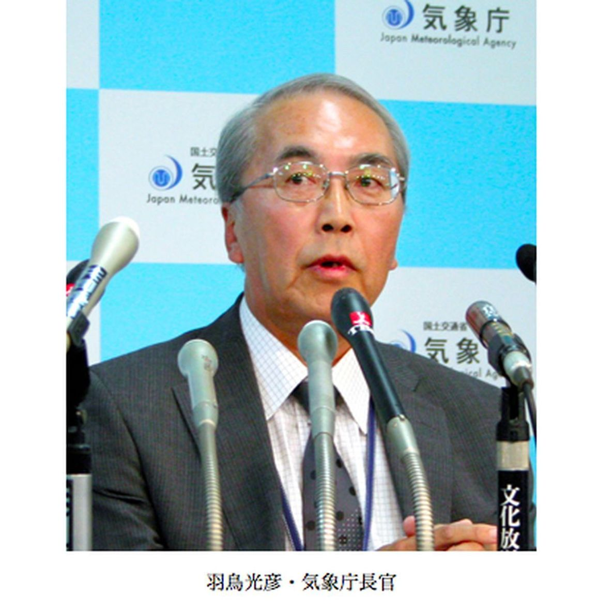
ネイチャー誌への掲載が差し止められた気象庁気象研究所の青山道夫（５８）らの論文は１１年１０月、別の科学誌「エンバイロメンタル・サイエンス＆テクノロジー」に載った。
福島原発事故による海の放射能影響という内容は前と同じだが、気象研所長の加納裕二（６０）は今回はいっさい口をはさまなかった。「分量が増えて丁寧に解説された。誤解を招く心配はもうない」という。
かつて気象庁は各地の気象台で放射能を測っていたが、地方自治体に設置され始めたモニタリングポストで代替できるとの理由で、２００５年度をもって終わる。放射能に関する事業は、気象研の研究事業だけとなった。文部科学省がふり分ける放射能調査研究費でまかなわれる。
気象庁の本省は国土交通省だが、その予算に口をはさむ余地はない。国交省大臣官房の主査は「窓口なので一応、ここを通って手続きは進みますが、右から左へ素通りです」。
文科省の担当は原子力安全課防災環境対策室。係長の山口茜はいう。「事故の緊急対応に予算をまわしたいと財務省がいってきたのです」
緊急時に使える予備の財源などはなかったのだろうか。
財務省主計局の担当主査、佐久間寛道はいう。
「いきなり予備費や補正予算を使って、増税することで国民に納得いただけるでしょうか。まずはすでに与えられた予算、つまり放射能にかかわる予算から見直すのが当然です。新年度事業が始まってからでは調整できなくなります」
今回のような非常事態でも、放射能対策費は関連予算を削って対応しろ――。それが国の論理らしい。そのため、半世紀以上継続した放射能観測が止まりかねなかった。
気象研に３２年勤めた上智大客員教授の広瀬勝己（６３）は「放射能は国民が神経質になる。だから責任は負いたくない、かかわらない、それが気象研の体質でしょう」という。
「世界最長の観測を、事故の放射能をとらえている最中に中断したら、国際的に責められる問題。予算がないとの理由なら笑いものです。データは後から絶対にとれません」
青山は１１年１０月３日、内閣府の「職員の声」にメールを送った。福島原発事故後の気象研の行為の検証を求める第三者委員会の設置の提案だ。
（＝敬称略）
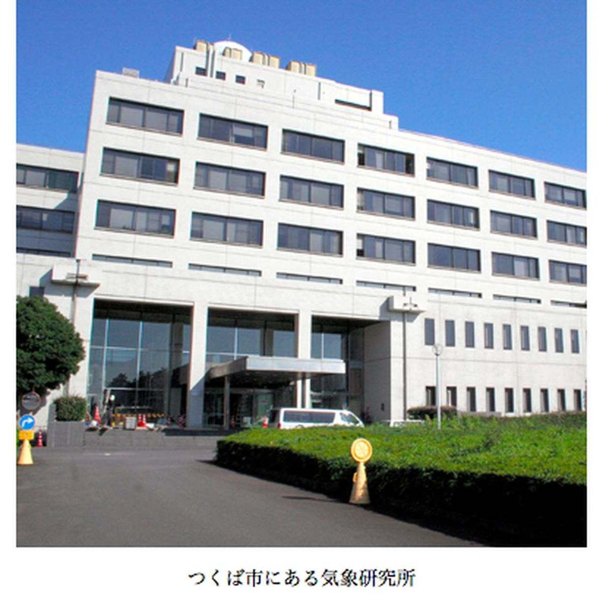
プロメテウスの罠〔３〕 本庁は告げた「放射能観測を中止せよ」
著 者 朝日新聞（中山由美）
発行所 朝日新聞社
〒１０４―８０１１ 東京都中央区築地５―３―２
http://www.asahi.com/
発売所 朝日新聞社デジタル本部
〒１０４―８０１１ 東京都中央区築地５―３―２
http://www.asahi.com
２０１２年１月２７日 ＷＥＢ新書版発行
２０１３年１１月３０日 ＥＰＵＢ版発行
©2012 The Asahi Shimbun Company
All rights reserved. No reproduction or republication without written permission.
ISBN 978-4-90712-552-3
〈ご注意〉本コンテンツは、購入者個人の閲覧目的のためのものです。私的範囲を越える利用・譲渡などは禁止します。
〈おことわり〉本コンテンツは２０１２年１月２７日に刊行されたＷＥＢ新書版を底本としました。ＥＰＵＢ版の刊行にともない、体裁や表記を直した場合があります。 企業、組織などの名称、人物の役職、肩書等はいずれも記事初出当時のものです。